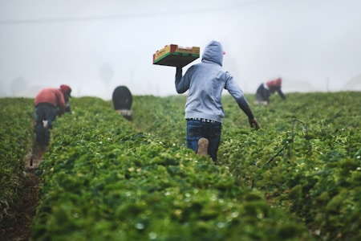
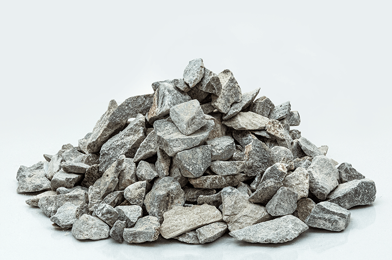
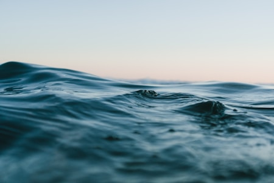

شرکت معدنی پیرتاک فعالیت خود را در سال ۱۳۷۲ با هدف اکتشاف، استخراج و فرآوری مواد معدنی آغاز نمود.
از مهمترین معادن، معادن شاقز الیگودرز میباشد. در سال ۱۳۹۳ شرکت صبا بهپر ایرانیان برای فرآوری سنگ لاشه کربنات کلسیم کارگاه شماره ۸ تأسیس شد.
مزیت رقابتی: یکنواختی و خلوص بالا به دلیل مالکیت اختصاصی معدن.

از مش ۴۰۰ تا ۲۵۰۰، تولید کارخانه صبا بهپر

سنگدانههای آهکی برای پروژههای عمرانی

فرمولهای سفارشی برای چسب، لاستیک، خوراک دام